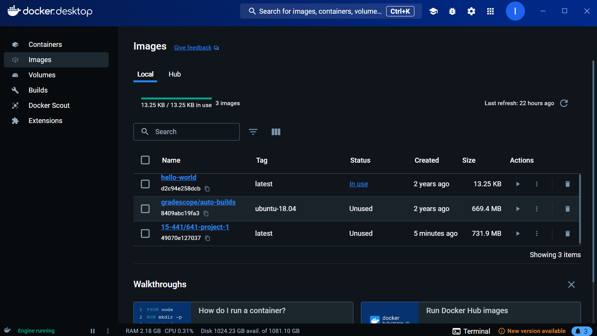
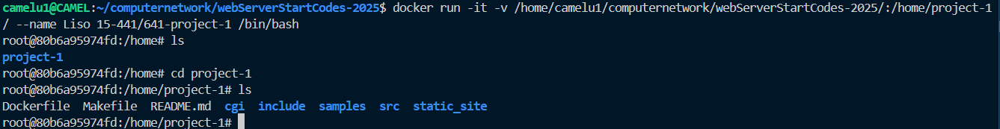

Docker wsl
通过wsl部署docker
下载docker
下载docker desktop：https://docs.docker.com/get-docker/
安装好docker后，在命令行输入 docker ，可以看到docker的一些命令使用方法；或者输入docker -v，可以看到docker的版本号。
这证明docker已经安装成功了。
进入项目文件夹
-
项目文件夹中要有dockerfile，关于dockerfile，见Docker Dockerfile
-
安装
docker-buildx插件：
- 拉取镜像到本地
运行:
再运行下一步build，这样就不会出现无法从 Docker Hub 获取镜像的的错误。（实在不行多换几个源）
- 创建镜像:
拿CMU 15-441/641 Networking and the Internet Project 1: A Web Server Called Liso 项目举例：
docker build 创建镜像
-t name:tag 镜像名称 : 标签
(latest 这是镜像的标签（tag）。标签用于区分同一镜像的不同版本。
latest是默认标签，表示“最新版本”。你可以使用其他标签，例如v1、v2等。)-f 指定要使用的DockerFile路径
. Dockerfile 文件所在目录，可以指定Dockerfile 的绝对路径
-
成功截图：

-
docker desktop的images中也会显示对应的镜像 
-
启动容器：
docker run -it -v /home/camelu1/computernetwork/webServerStartCodes-2025/:/home/project-1/ --name Liso 15-441/641-project-1 /bin/bash
docker run -it -v 宿主机路径 : 容器路径 --name 容器名 镜像名 /bin/bash
docker run 启动容器
-it /bin/bash 使用终端交互式运行
-v 数据卷（共享文件夹）
--name 容器名
-

-
如果在下次启动时要重新启动原容器，而不是重新运行一个同名的容器。运行以下命令：
你可以使用 docker start 和 docker attach 命令来重新启动并进入容器。
-
启动容器 使用以下命令启动容器：
或者使用容器的名称：
-
进入容器 容器启动后，使用以下命令进入容器：
或者：
-
如果想重新运行一个同名的容器，你需要先删除或重命名现有的同名容器。
-
删除现有的容器 使用以下命令删除现有的容器：
或者：
-
重新运行新的容器 删除后，你可以重新运行新的容器：
-
可以使用以下命令查看所有容器的状态：